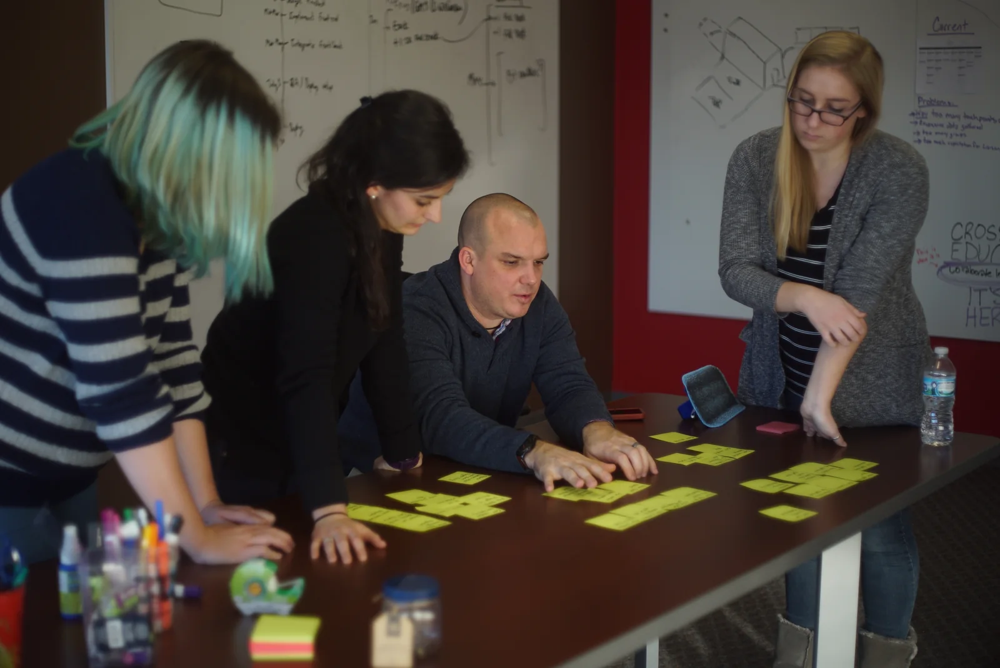
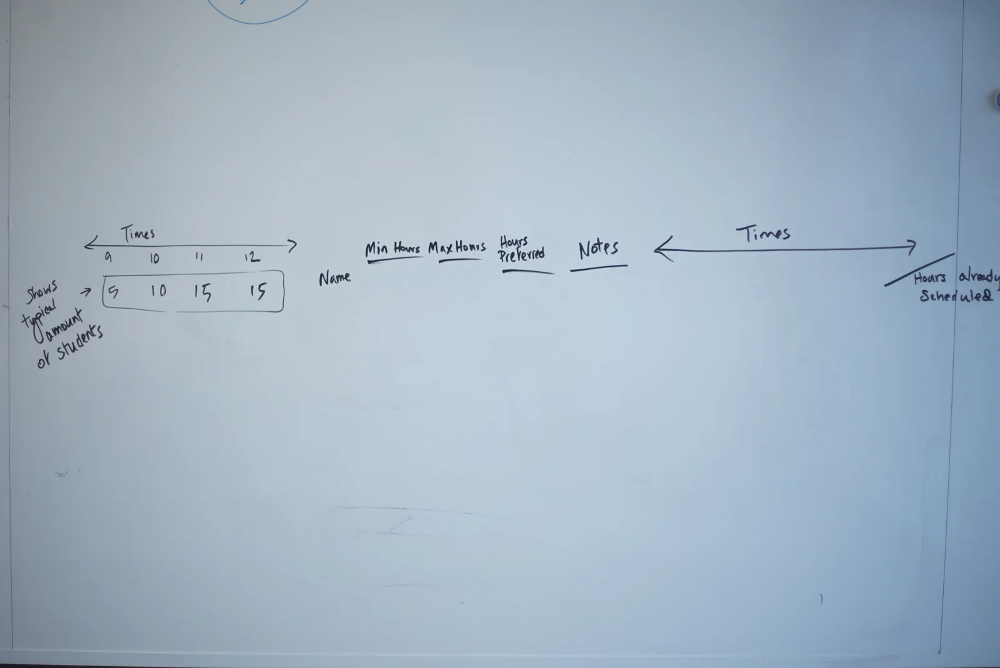

01 / Crossroads Education
Research for
learning tools.
Research and interface work for learning environments, Element and Nexus.
My role
At Crossroads Education, I worked on a UX team supporting Element and Nexus. My contribution included research, information architecture, user flows and interface choreography, alongside a lead UX designer.
Observe the tutoring center.
I observed tutoring-center sign-in, seating and student interaction. The research also included stakeholder interviews, surveys, focus groups and competitor research.

Organize information with the team.
I used open, closed and hybrid card sorting, personas and user flows to review information architecture with the team before developing screens.

Original team sketch of the schedule grid and supporting controls.
View the full-size sketch
Research and prototype artifacts.

Tasks for staff information, hours and scheduling, grouped during the workshop.
View the full-size task grouping
From the Nexus working notes 2018 Selected transcription
The Nexus notes use notebooks to give people a familiar place to keep their work, control permissions and return to it later. The outline then works through search, version history and the handoff between student and tutor.
- Shelf
- A group of Notebooks.
- Notebook
- A group of sections and/or pages inside of shelves.
- Page
- An individual saved canvas that can exist inside of a notebook, section, or sub-section.
- Canvas
- A collaboration space that users can work in.
Proposed tutor flow: ask a question → join the queue → work with a tutor → confirm understanding → review the session for the knowledge base.
Selected definitions from the original outline. Capitalization preserved.
Proposed tutor flow, condensed from the working notes.
An original interaction study showing a search of the tutoring knowledge base.
Prototype and test state changes.
My work also included UI choreography and interface testing with Cypress, covering movement between states and the actions available in each state.